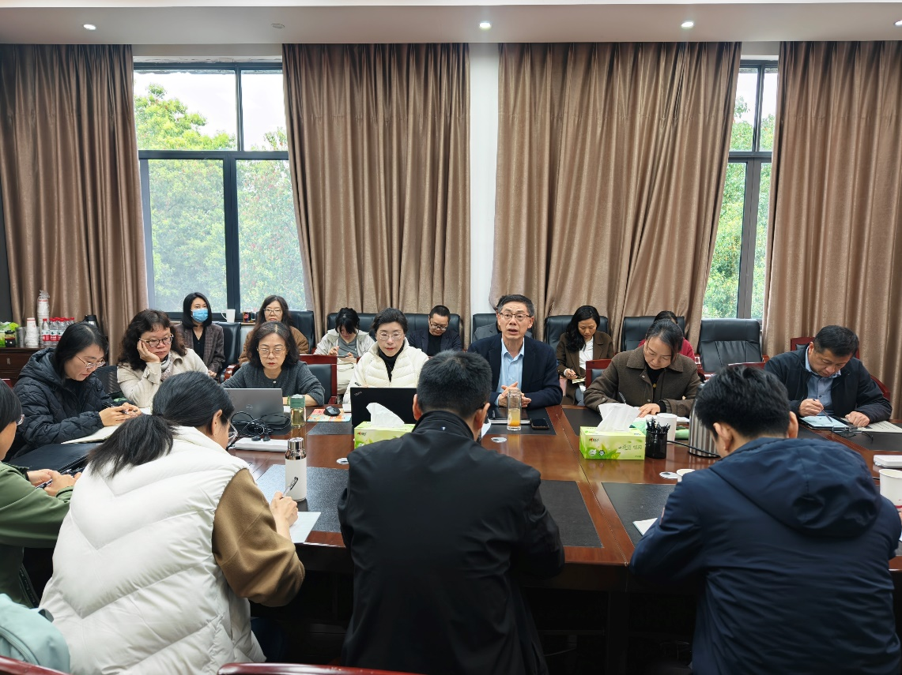

学院通知 · 科研创新
图书馆召开新学期干部培训会 锚定“十五五”谋划高质量发展
发布时间：2026-03-11 10:04:00
3月6日，四川大学图书馆新学期干部培训会在工学图书馆五楼会议室召开。会议由图书馆党委书记秦远清主持。馆领导班子成员、各中心（室）主任、副主任、党支部书记和副书记参会。 秦远清首先对图书馆全体干部进行馆员素养与能力提升培训。 他指出，当前正值教育强国建设全面推进、学校“双一流”加速冲刺、图书馆“十五五”谋划布局的关键节点。召开此次培训会，旨在 进一步 提升干部政治站位 、管理能力、协同能力以及 履职 尽职 能力， 不断增强全馆的整体凝聚力、创新力和 干事创业合力，为建设面向未来学习的 一流大学 图书馆锻造过硬 干部 队伍。他强调，面对高等教育数字化转型和人工智能技术深刻变革，高校图书馆正经历从资源管理者向知识服务者的角色转型。各中心（室） 、党支部干部 作为 图书馆的 中坚力量，承载着多维度期盼，必须不断提高认识 ， 主动担当作为 ， 当好部门 之间 协作运行的“定盘星”、上下高效沟通的“桥梁枢纽”、工作加速推进的“小火车头” 和 引领清风正气的“风向标”。面对人工智能等新技术浪潮带来的机遇与挑战，图书馆干部要聚焦重点任务，在图书馆转型升级的关键时期，积极应对AI赋能资源建设、智能检索与个性化推荐、智慧空间构建、数据驱动 的学科服务、开放获取背景下资源建设模式重构等新课题，在意识形态把关、科学管理提升、队伍建设、数字化转型、空间优化等方面取得新突破，持续强化图书馆治理能力，以优质服务和突出贡献不断提升图书馆影响力 。 兰利琼馆长与大家一道就图书馆“十五五”事业发展规划的落地实施展开研讨。她以“锚定一流 共创未来”为题引导大家从“十五五”规划的目标和任务出发，一起研讨如何把思考和谋划转变成行动力，进而落实落地为优异成绩。整个研讨阶段紧紧围绕建设“面向未来学习的智慧图书馆”这一核心目标，从一流文献资源保障体系建设、人才培养支撑服务体系完善、科研创新服务能力提升、智慧空间建设路径、古籍保护利用模式、馆际协同发展机制等六个方面的重点任务展开。与会人员结合部门职责和工作实际，既畅谈对新形势、新要求的理解，更立足自身的切实感受、深度思考和认真研究来提出建议，既从本岗位本部门的职责出发，更就跨部门协同与创新真诚献言献计，研讨中就技术赋能、升级深化、整合力量、精准服务、品牌建设等形成多项共识。 本次培训会主题鲜明、内容务实，通过专题培训与深入研讨，全体干部进一步统一了思想、凝聚了共识、明晰了方向。大家表示，将以此次培训为新的起点，把研讨成果转化为推动工作的实际行动，聚焦“十五五”重点任务，强化协同、狠抓落实，以实干实效推动图书馆高质量发展，为学校“双一流”建设贡献更大力量。
